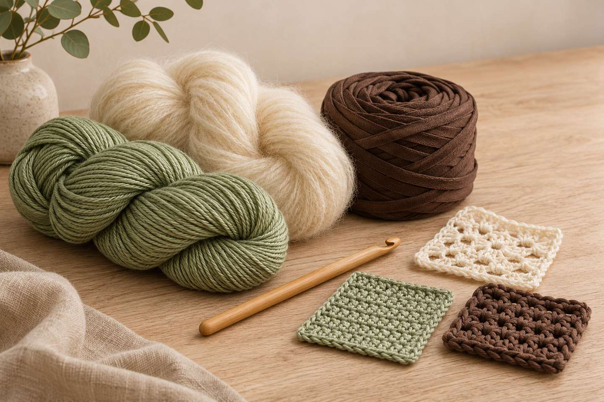
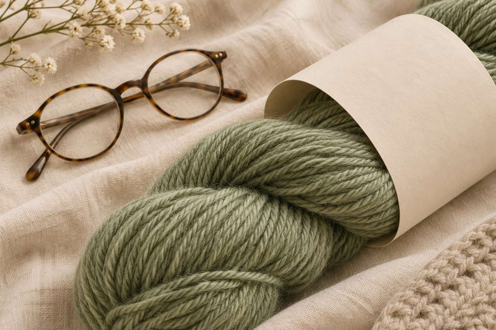
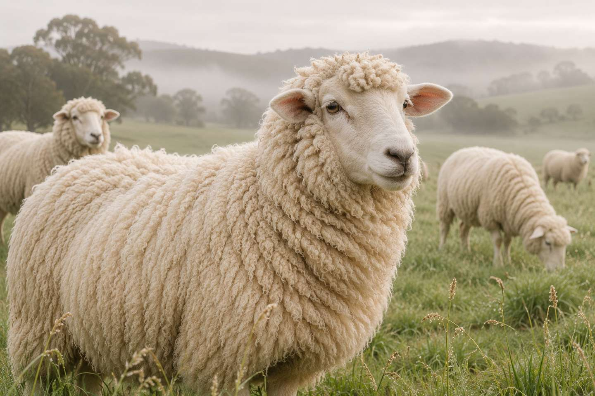
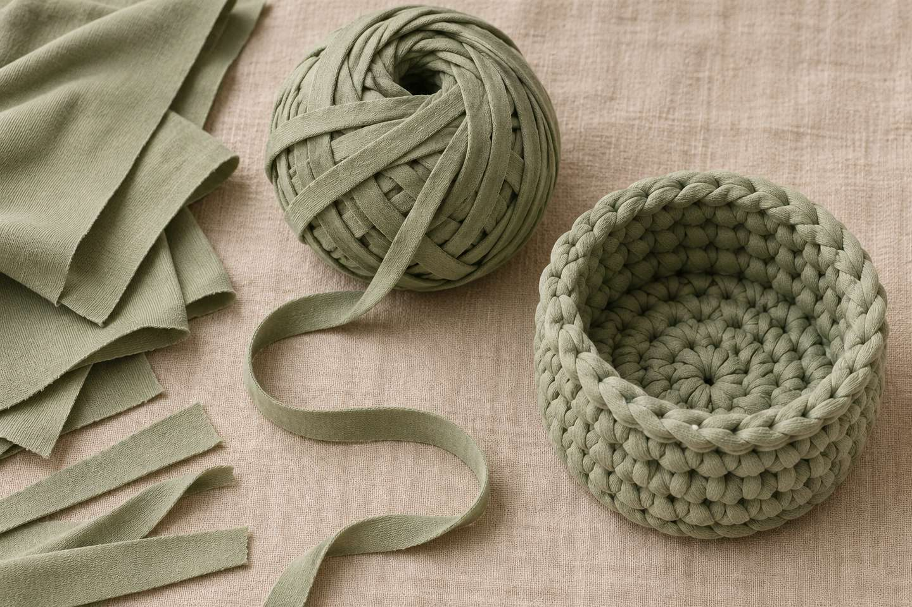
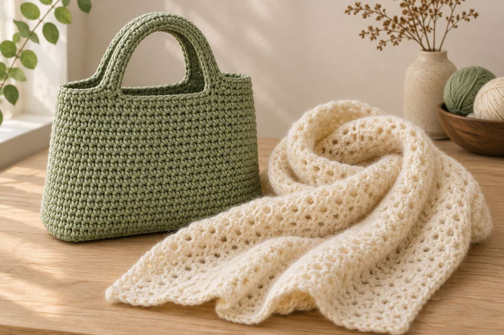
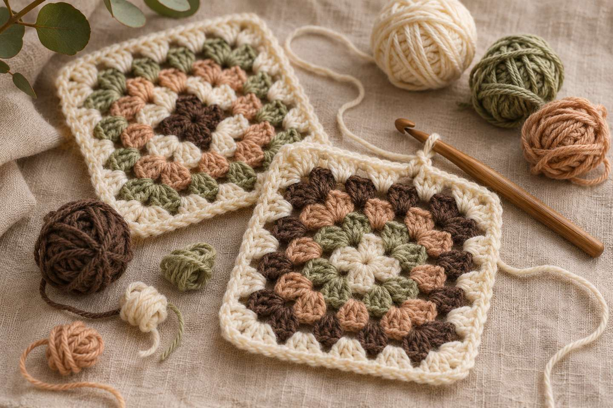

Sustainable Yarn: 6 Brands, 4 Labels – and How to Spot Good Yarn

In short
The most reliable way to spot sustainable yarn is an independent label: GOTS stands for organic fibers (at least 70%) and controlled processing, the Responsible Wool Standard (RWS) for animal welfare with no mulesing, and the Global Recycled Standard (GRS) for recycled fibers. OEKO-TEX Standard 100, on the other hand, means “tested for harmful substances” – not “organic.” Below you'll find the four labels compared, six brands with their documented claims, and a checklist for your next yarn haul.
When you crochet, you hold the yarn in your hands for hours – and many of us want to know where it comes from. But labels often say things like “natural,” “eco” or “conscious,” which don't mean anything specific. In this post I explain which labels actually tell you something and introduce six brands that make verifiable claims about organic cotton, animal welfare or recycling. This isn't a paid recommendation or a ranking – every claim comes from the brands or retailers themselves and is linked below.
Which labels exist for sustainable yarn?

| Label | What it means | What it doesn't mean |
|---|---|---|
| GOTS (Global Organic Textile Standard) | At least 70% certified organic fibers, grown without synthetic pesticides, herbicides or GMOs; every processing step is controlled, including social criteria such as bans on child and forced labor | Not automatically 100% organic – check the percentage |
| RWS (Responsible Wool Standard) | Animal welfare based on the “Five Freedoms,” mulesing strictly prohibited, responsible land management, traceability from farm to product | Not organic; only products made of 100% RWS wool may carry the logo |
| GRS (Global Recycled Standard) | Traceable recycled fibers; at least 20% to be certified, at least 50% for the on-product logo; plus environmental and social requirements for facilities | Not 100% recycled – check the share on the label |
| OEKO-TEX Standard 100 | Every component tested against more than 1,000 harmful substances; safe for human health | Not an organic or environmental label – says nothing about farming or animals |
What is mulesing – and why does “mulesing-free” matter?

Mulesing means removing strips of skin from around a merino sheep's tail to prevent flystrike. It's considered painful and is mainly practiced in Australia. The Responsible Wool Standard explicitly prohibits mulesing (see sources). If a merino yarn says “mulesing-free” without an RWS label, that's the brand's own claim – when in doubt, ask where the wool comes from.
6 yarn brands with documented sustainability claims

Listed alphabetically. “According to …” means that's what the linked brand or retailer page says. Whether a specific yarn is certified is always shown on its label.
| Brand | Example | Documented claim | Great for crocheting |
|---|---|---|---|
| DROPS (Garnstudio) | Wool yarns, superwash yarns | According to DROPS: wool preferably from South America, no Australian wool because mulesing may occur; all superwash yarns OEKO-TEX Standard 100 certified and made in the EU; no angora | Hats, shawls, sweaters |
| Hoooked | Soft Cotton, Eco Barbante Milano | According to retailer LoveCrafts: a Dutch brand that turns textile and cotton remnants (jersey) into yarn; Eco Barbante Milano is a finer recycled cotton yarn | Bags, baskets, coasters, amigurumi |
| Knitting for Olive | Merino, Cotton Merino, No Waste Wool | According to the brand: Merino is RWS certified and non-mulesed; Cotton Merino is 70% organic cotton and 30% RWS merino; No Waste Wool is 50% GRS recycled wool and 50% RWS merino | Soft shawls, baby items, hats |
| Lana Grossa | e.g. Cool Wool | According to Lana Grossa: GOTS certificate number 35827; all products since the 2020 collections guaranteed mulesing-free, merino mostly from South America | Hats, wrist warmers, garments |
| Lang Yarns | LAMBSWOOL | According to Lang Yarns (blog, December 2024): entire production chain RWS certified, merino from a farm in eastern Australia, processed in Italy | Hats, scarves, sweaters |
| Rosários4 | For Nature | According to retailer A Yarn Story: 100% GOTS-certified organic cotton, DK/light worsted weight | Amigurumi, baby items, summer pieces |
Tip: Lana Grossa's GOTS certificate applies to the company – check each yarn's label to see which ones carry the GOTS logo.
Checklist: how to spot good, sustainable yarn


- Labels over buzzwords: a GOTS, RWS or GRS logo on the label means more than “eco” or “natural.”
- Read the percentages: “with organic cotton” can mean a small share – the fiber content is on the label.
- Where the wool comes from: for merino, look for “RWS” or “mulesing-free.”
- Know what OEKO-TEX means: tested for harmful substances, but not an organic label.
- Match the project: cotton for amigurumi and bags, wool for warm pieces – more in the best yarn for crochet beginners.
- Use your stash: the most sustainable yarn is the one you already have – for example in a scrappy granny square blanket or advent calendar pouches.
More about yarn
Which hook goes with which yarn? See the 6 essential crochet tools. Yarn weights and gauge basics are in the crochet basics, and every term is in the abbreviations guide.
What about you? Do you look for labels when you buy yarn – and which yarn do you love? Tell me on Instagram or TikTok! 🧶
Frequently asked questions about sustainable yarn
What does GOTS mean on yarn?
GOTS stands for Global Organic Textile Standard. A product with the GOTS logo contains at least 70% certified organic fibers, and every processing step is controlled, including social criteria such as bans on child and forced labor.
Is OEKO-TEX an organic label?
No. OEKO-TEX Standard 100 means the yarn has been tested against more than 1,000 harmful substances and is safe for human health. It says nothing about organic farming, animal welfare or environmental requirements.
What does mulesing-free wool mean?
Mulesing means removing strips of skin from around a merino sheep's tail to prevent flystrike. Mulesing-free wool comes from sheep that weren't mulesed. The Responsible Wool Standard (RWS) prohibits mulesing; without a label, “mulesing-free” is the brand's own claim.
Is recycled yarn good for crochet?
Yes, especially for sturdy projects like bags, baskets and coasters. Recycled yarns made from textile remnants can vary slightly from ball to ball. The GRS logo means at least 50% recycled content.
How do I spot sustainable yarn in a store?
Check the label: logos such as GOTS, RWS or GRS, the exact fiber content in percent, and for merino the words RWS or mulesing-free. General words like “eco” or “natural” aren't labels.
Sources
- GOTS: Key features of the Global Organic Textile Standard
- Textile Exchange: Responsible Wool Standard – Quick Guide (PDF)
- ETKO: What is the Global Recycled Standard (GRS)? (certification body)
- OEKO-TEX: STANDARD 100
- Lana Grossa: Sustainability
- DROPS / Garnstudio: Sustainability (Norwegian)
- Lang Yarns: RWS – Responsible Wool Standard (blog, December 2024)
- Knitting for Olive: Yarn overview
- A Yarn Story: Rosários4 For Nature (retailer page)
- LoveCrafts: Hoooked Yarn (retailer page)